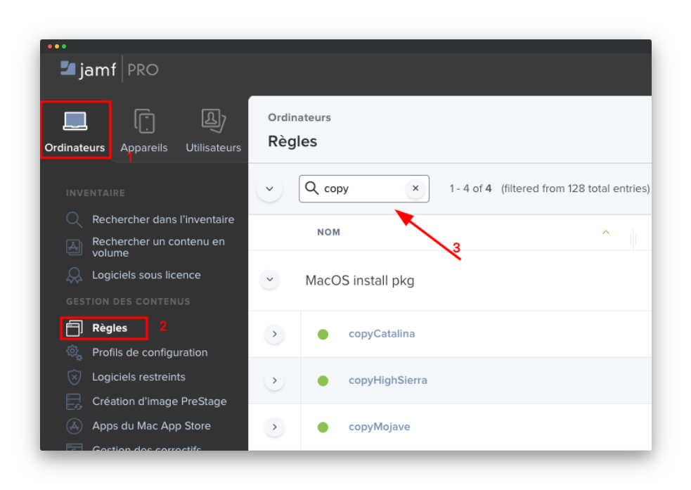

Déploiement OS depuis Jamf
Contents
Déploiement OS depuis Jamf#
Copy le logiciel#
Pour déploiement OSX sur une machine, il y a deux étaps principeaux, il nous faut d premièrement copier le package depuis le serveur dans le dossier application de la machine en local, ensuite nous pouvons le lancer pour reinstaller le système.
Tous ces différents règle se trouve dans Jamf.
Jamf/Règles#
Allez sur l’onglet ordinateur de Jamf et ensuite “Règles”. Ici vous pouvez faire une recherche pour trouver une règle qui nous aide à copier le package OS depuis le serveur. Si vous ecrivez “copy” dans le champ de recherche il vous affiche les differents packages d’OS.
{kind=link}
La version de l’OS (HighSierra, BigSur, etc…) va dependre de la machine sur laquelle vous vous voulez faire cette installation. Pour trouver des infos sur l’OS de la machine vous pouvez maintenant cliquer sur l’icône d’Apple au coin de votre monitor et choisir “à propos de ce Mac”.
Quand vous êtes sur de la version de l’OS que vous allez installer, vous pouvez selectionner n’import quelle règle et regarder ses configurations. Ici vous voyez un champ qui s’appelle “Evenement personalisé” la valeur de ce champ permet de declancher l’execution de cette règle.

Ce processus est similaire entre les règles et on peut les appeler par leurs propres declancheurs.
Jamf/Terminal#
Copier le package#
Nous pouvons maintenant passer à faire l’installation sur la machine client. Ovrez d’abord le Terminal de la machine, l’installation des packages depuis Jamf peut se faire en ligne de commande.

Il nous faut d’abord copier le package depuis le serveur sur la machine client en local. \Ce-ci est la commande pour copier avec Jamf.
sudo jamf policy -event copycatalina
{kind=link}
Note
sudo: il vous permet de lancer des commandes en tant qu’administrateur, dans notre cas pour lancer la commande “jamf” il faut un droit d’administrateur.
jamf: la commande que permet de lancer le jamf-CLI (Commande Line Interface) et donner des tâches spéicifique à Jamf
policy: cette commande dit à jamf de contôler les differents stratégie dans le serveur de logiciel Jamf (JSS - Jamf Software Server)
event: cette une option/flag qui modifie le fonctionnement d’une commande. Ici notre flag appelle un declancheur pour notre package. Il dit à commande “policy” de prendre l’evenement “copycatalina” dans JSS.
declancheur: c’est un evenement personalisé qu’on avait vu dans les paramètres de cette règle
Quand le package est copié, on peut le voir dans le dossier /Applications, on peut maintenant passer à l’étap suivant.

Effacer le système et le reinstaller du zéro#
Toujours sur la machine client, ouvrez le Terminal. Cette fois pour effacer l’OS et le reinstaller de nouveau. Cette commande efface le système entièrement ensuite install le package OS qu’on vient de copier dans le répertoire /Applications.
sudo jamf policy -event eraseinstallcatalina

Comme on voit dans la photo, le declancheur pour effacer et installer est “eraseInstallCatalina”. Quand cette commande est lancée on peut le laisser, il fera ce procès tout seul.
Après l’installation il rest que les configuration de la langue et region à faire.